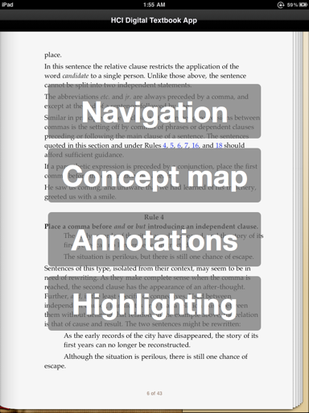
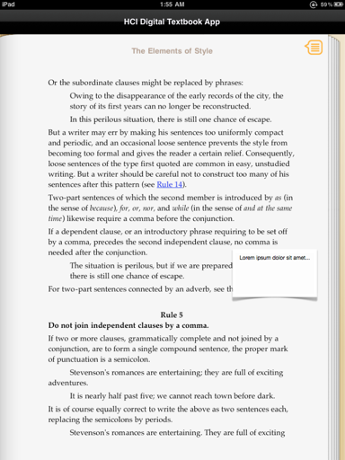
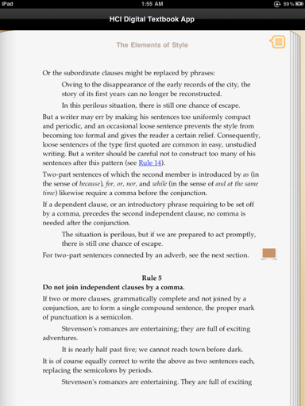
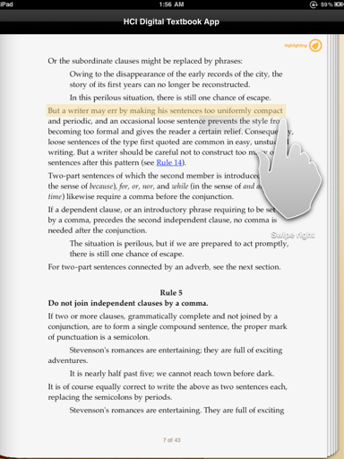

HCI Project
This phase
- Home
- Prototyping improvements
- Evaluation goals
- Evaluation design
- Evaluation results
- Redesign
- Appendices
Prototyping improvements
List of improvements
-
Created menu page to link to the demonstration of each feature. Now, when the prototype begins, the user is presented with a button that links to each feature of our prototype (i.e., navigation, concept map, annotations and highlighting).

-
Added a demonstration of the annotations feature. Prototype now contains a low-fidelity demonstration of the annotations feature, representing how a user creates an annotation, and how existing annotations are displayed to the user while reading.
 
-
Added a demonstration of the highlighting feature. Prototype now demonstrates the new highlighting feature, which allows the user to highlight text simply by dragging their finger across the page when in highlighting mode.
